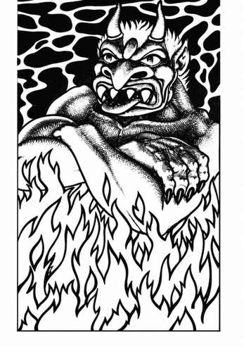

火巨灵 · Efreeti
 |
|
火巨灵来自火元素位面，正如风巨灵来自气元素位面。它们是风巨灵的敌人，一旦相遇便会攻击。火巨灵最多可被迫服役 1,001 天，或直至实现三个愿望；它们绝非甘愿服从，往往只按命令字面行事，借此曲解主人的意图。
火巨灵每日可各使用一次以下能力：实现至多三个愿望（随后获得自由）、隐形、气化、侦测魔法、变巨（如 10 级魔法师）、变形术、制造具有视觉和听觉效果的幻象（无需专注，除非遭魔法解除或被触碰，否则持续存在），或创造火墙。火巨灵还可随意使用造火术或烟火术。
普通火焰攻击不会伤害火巨灵；魔法火焰攻击的生命骰与伤害骰均承受 −1 惩罚。
火巨灵步行或飞行时，最多可不知疲倦地携带 7,500 金币重量。携带双倍重量时，步行只能坚持 3 回合，飞行只能坚持 1 回合。超出 7,500 金币重量后，每少于 15,000 金币重量的 1,500 金币，步行或飞行时间便增加 1 回合。携带超重物品后，火巨灵必须休息整整 6 回合。
传说中的黄铜之城是火巨灵的城堡，位于它们的来处。可以在那里捕获火巨灵，但也可能要同时对付数十乃至数百只火巨灵。火巨灵以厌恶奴役、渴望复仇、残酷以及善于误导而闻名。它们由一位强大的苏丹统治。